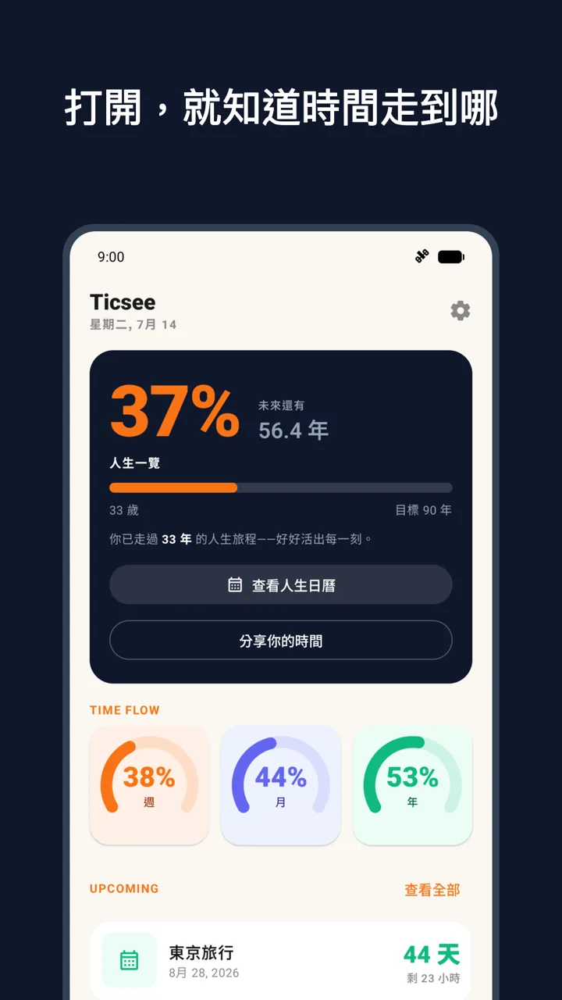
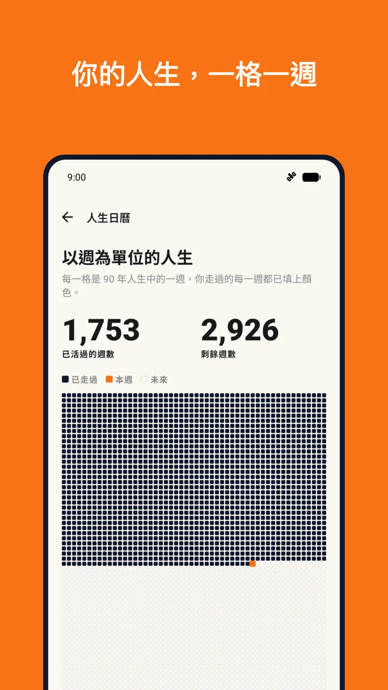
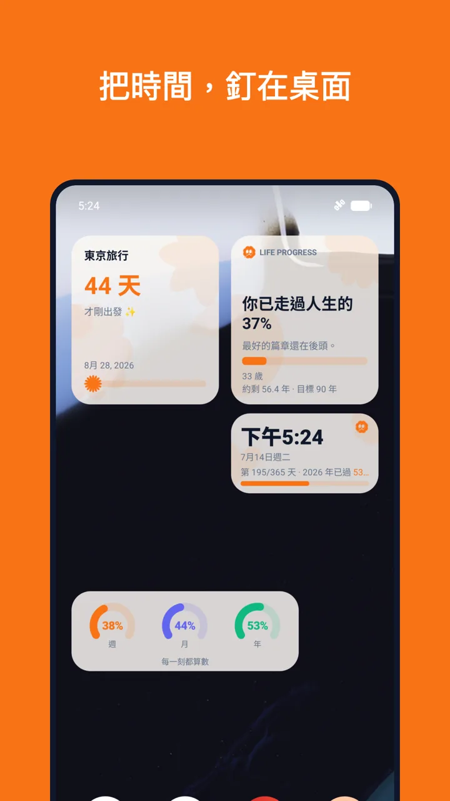
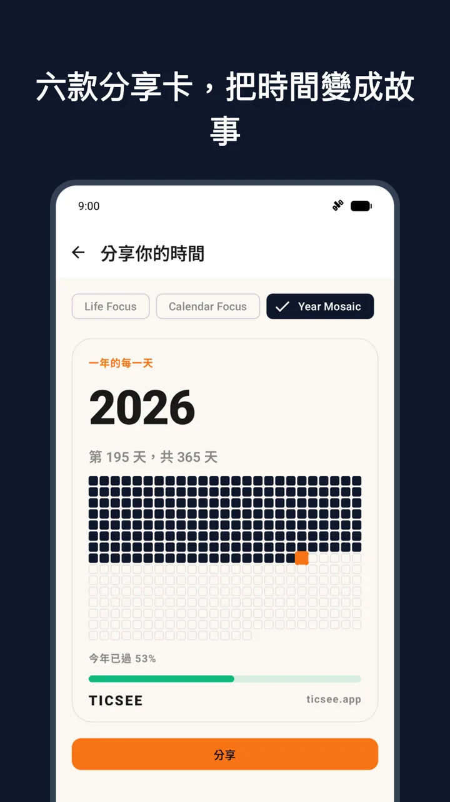
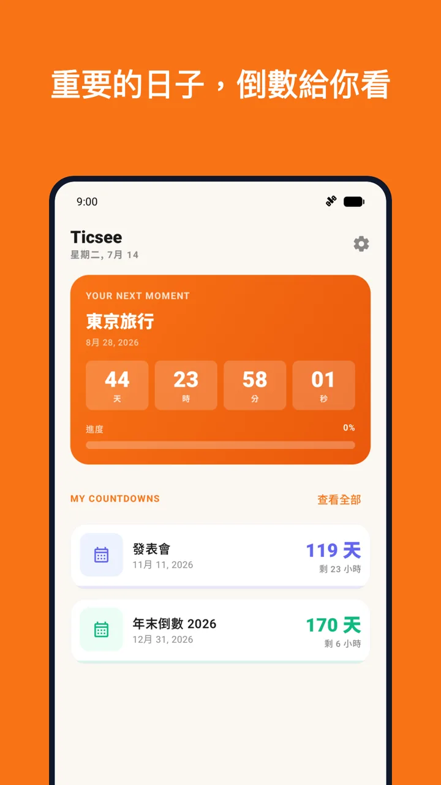

TIME FLOW
現在的時間，
一眼就懂。
今天、本週、本月、今年的進度，同時放在首頁。清楚，但不給壓力。
TIME, MADE VISIBLE
用人生日曆、年進度、事件倒數與桌面小工具，看見時間，也記得好好生活。
Android ・ 免費下載 ・ 無廣告 ・ 不需註冊帳號

LIFE CALENDAR
把走過的每一週排成一張人生日曆。不是倒數生命，而是停一下，看見自己正在這裡。

TIME FLOW
今天、本週、本月、今年的進度，同時放在首頁。清楚，但不給壓力。
YOUR NEXT MOMENT
建立生日、旅行、紀念日或任何期待的事件。倒數與提醒，剛剛好就好。
ON YOUR HOME SCREEN
四款桌面小工具，把人生進度、時間流動、事件倒數放在每天都會看見的地方。

MADE TO SHARE
多款分享卡片，讓時間進度、人生週數與下一個重要時刻，也能成為自己的生活記錄。
左右滑動，查看更多 App 畫面


GET STARTED
從 Google Play 免費下載，不用註冊帳號。
馬上得到你的人生日曆與時間進度。
把小工具加到主畫面，為生日、旅行或紀念日建立第一個倒數日。
PRIVACY, BY DESIGN
Ticsee 不需帳號、不含廣告，也沒有第三方分析工具。你在 App 裡建立的個人資料、事件與設定，主要保存在裝置上；若啟用 Android 系統備份，資料可能由系統備份至你的 Google 帳戶。
閱讀完整隱私權政策FAQ
Ticsee 是一款 Android 的人生日曆與時間進度 App：把今天、本週、今年的進度視覺化，並提供事件倒數與桌面小工具，免費且無廣告。
人生日曆把你走過的每一週排成一格一格的圖，讓你直觀看見人生進度與剩餘週數；設定生日與規劃年限後就會自動產生。
不用。Ticsee 免費下載、沒有廣告，也不需要建立帳號，打開就能使用。
不會上傳到我們的伺服器——事件與設定保存在你的手機上；若你開啟 Android 系統備份，備份由你的 Google 帳戶與裝置設定控制。細節請見隱私權政策。
Ticsee 提供四款 Android 桌面小工具，把人生進度、時間流動與事件倒數放在主畫面上，不用打開 App 也能看見時間。
可以。建立事件後就有倒數日顯示，也能開啟生日提醒、紀念日提醒或每日提醒，時間到了溫和地通知你。
目前僅支援 Android；iOS 版本尚未定案，若有消息會在 Google Play 頁面與本網站公告。